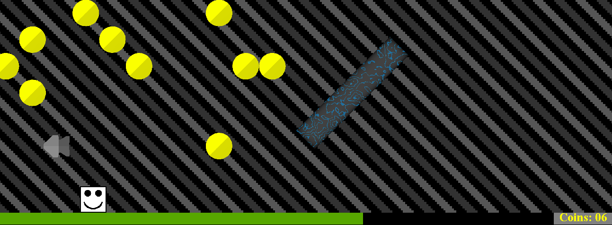
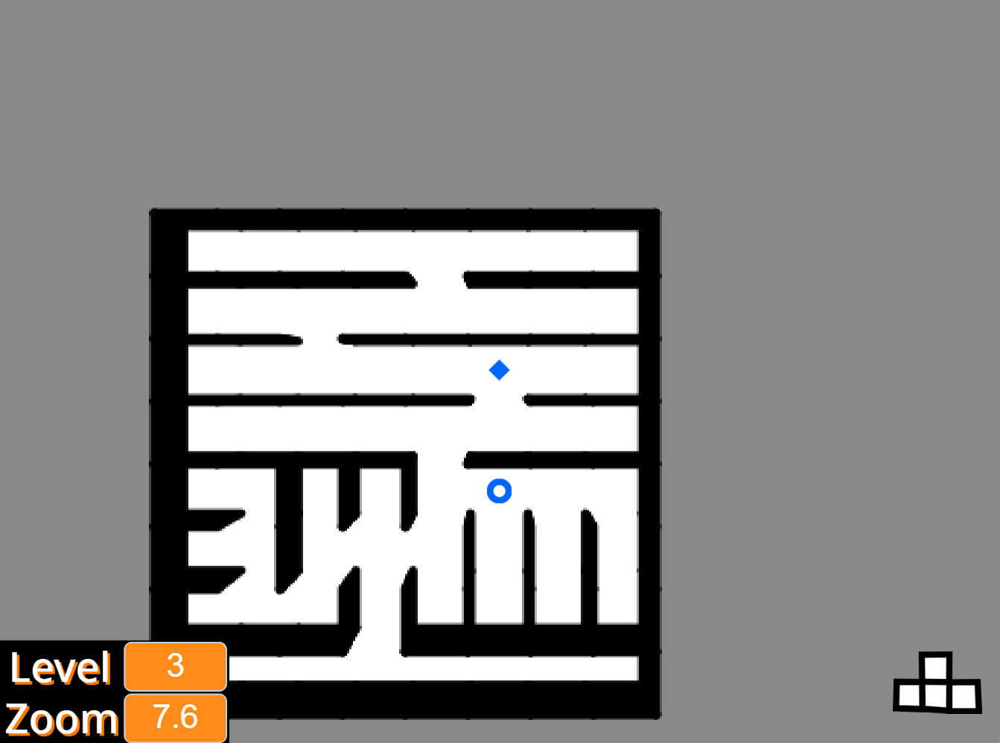
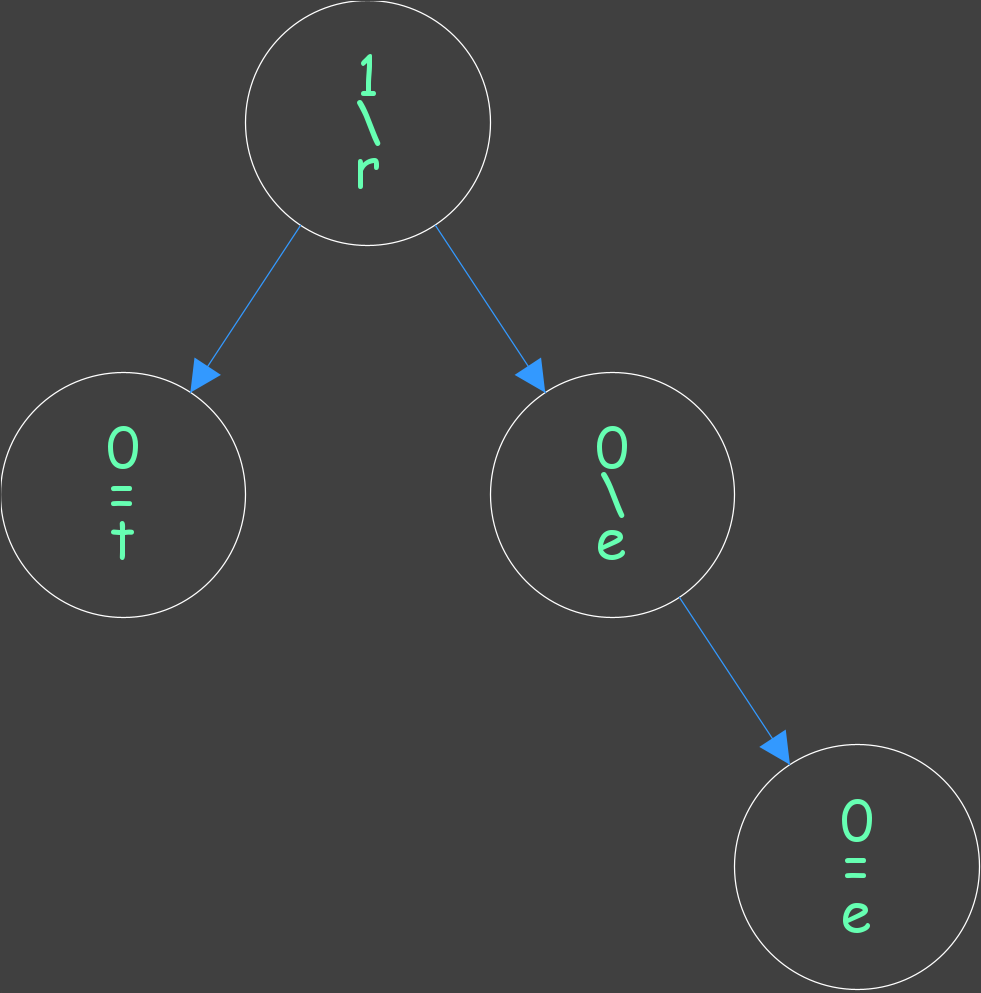

Portfolio
-
CSSE 220: Final Project
CSSE 220, known as Object-Oriented Software Development, had a final project where teams would create a game that was similar to Jetpack Joyride. It needed to react to the player pressing keys on the keyboard, and have the player stay within the bounds of the screen. The player character also needed to collide with and not go through barriers. There were missiles (sometimes homing) to avoid and coins to collect. My team decided to implement extra features, like sidescrolling, and resizing to fit the current window.
-
High School: Maze Games
In high school, in my free time, I worked on making a series of maze games. They gradually got more and more elaborate. Some are two player. Some have enemies to avoid. Some are 3D.
-
CSSE 230: Editor Trees
CSSE 230, known as Data Structures and Algorithm Analysis, had a (non-final) project where teams would implement a version of an AVL tree. When needed, the tree would rotate, which involves rearranging the structure of the tree to make it more efficient for traversing. The difference from a regular AVL tree is that it doesn't have the search property. It instead uses index to access items, which were characters. It is called "Editor" because it could be used as the backend of a word editor. The picture shown is the tree visualizer, useful in debugging. The tree spells out the word "tree" when read in an in-order traversal.